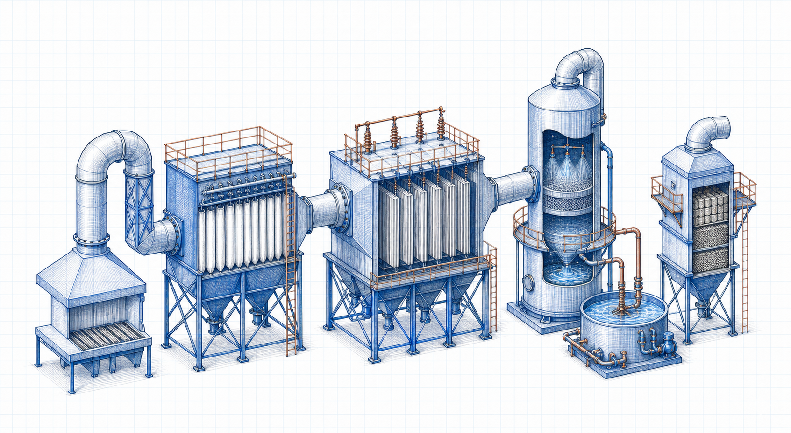

Level 2 process family
Air Pollution Control Processes
Follow the capture, separation, absorption and reaction stages used to control particulate matter, sulfur oxides and nitrogen oxides.

Explore by process
Process categories
01
Dust Collection
Baghouse capture, filtration and controlled dust-discharge processes.
Open topic group →02ESP Systems
Electrostatic charging, collection and rapping processes in ESP systems.
Open topic group →03FGD Systems
Wet flue-gas desulfurization, absorption, oxidation and gypsum-handling processes.
Open topic group →04DeNOx Systems
SCR and SNCR reagent-injection and reaction process flow.
Open topic group →